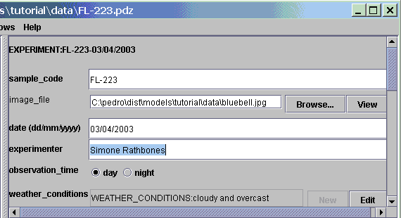
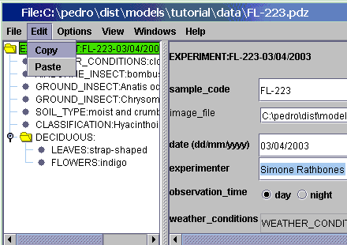
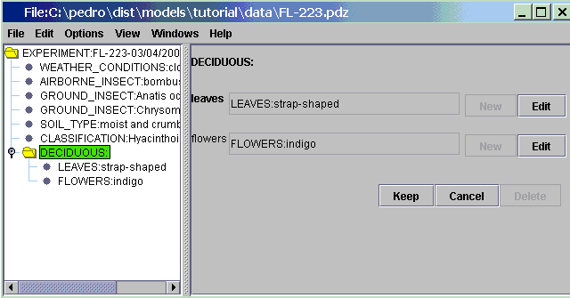
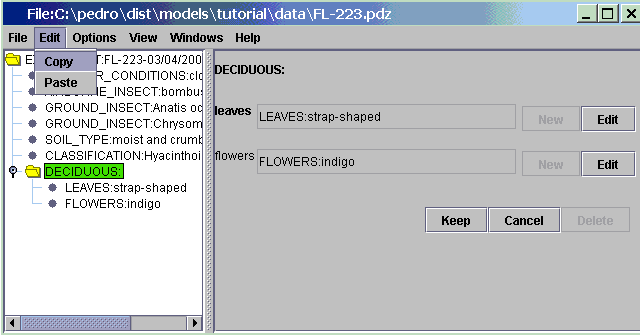

Copy
copies text or a record to the clip board. See also Paste
Copying Text
- Click and hold the mouse cursor in the text field of
interest. The selected text should appear highlighted.

- Click the Edit menu. Then click the Copy menu button.

The text can now be copied to a field in another Pedro window, or to
most popular word processing applications.
Copying a Record
- Click on the record in the record tree you wish to copy.

- Click the Edit menu. Then click the Copy menu button.

Copying a record will copy the record and all its subrecords. Records
that are copied to the clipboard can only be pasted into records of
other Pedro windows. You can't copy them into applications such as
Microsoft Word.